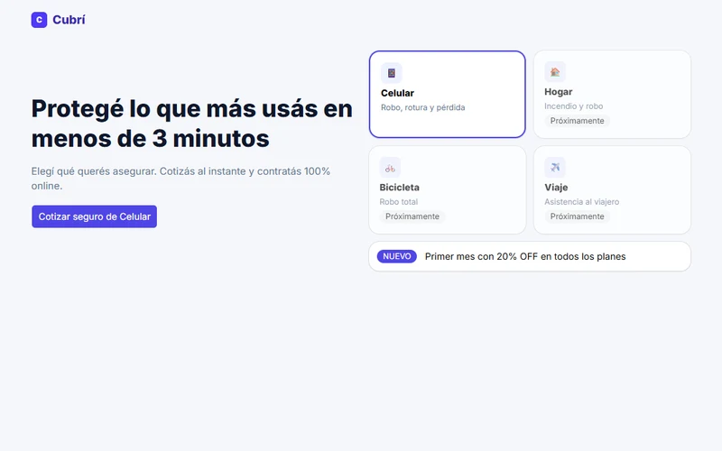

2026
Cubrí Seguros
Flujo mobile de 4 pasos para contratar un seguro de celular: cotizar, elegir plan, cargar datos y pagar.
Aprendizaje: manejar todo el flujo desde un solo objeto de estado y mostrar los errores solo cuando la persona sale del campo.
Leer el caso de estudio